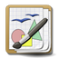

Grafik
Hier werden Artikel rund um das Betrachten, Verwalten, Bearbeiten und Erzeugen von Bildern gesammelt. Egal, ob man schnell ein Bild betrachten will oder eine komplette Fotosammlung verwalten möchte, für jeden Zweck gibt es reichlich Auswahl.
Bildbetrachtung und -verwaltung¶
Bilder verwalten
 Übersichtsartikel mit Kurzbeschreibungen zu verschiedenen Programmen
Übersichtsartikel mit Kurzbeschreibungen zu verschiedenen ProgrammenComix - ein Reader für Bilder und Bildarchive im CBR-, CBZ- und CBT-Format
DICOM - Bilder des in der Medizin üblichen DICOM-Formats anzeigen
digiKam - Bildverwaltung, Stapelverarbeitung, Foto-CD und mehr...
Eye of GNOME - Standard-Bildbetrachter für GNOME
Eye of MATE - Standard-Bildbetrachter für MATE
Feh - Bildbetrachter für die Konsole
F-Spot - ehemaliges Standardprogramm zur Verwaltung von Fotos, durch Shotwell abgelöst
Geeqie - Weiterentwicklung von GQview
GPicview - schneller Bildbetrachter
gThumb - einfaches Bearbeiten und Verwalten von Bildern
Gwenview - schnelles Betrachten, Browsen und Konvertieren von Bildern
Mirage - kleiner und schneller GTK-Bildbetrachter
nomacs - Bildbetrachter mit zahlreichen Werkzeugen und Bildbearbeitungsfunktionen
PhotoQt - interessantes, von Smartphones inspiriertes Bedienkonzept
Phototonic - Qt-Bildbetrachter, aber ohne Druckfunktion
Quick Image Viewer - für Spezialaufgaben
Ristretto - schlanker Bildbetrachter
Shotwell - Bildverwaltung mit eigener Datenbank, Nachfolger von F-Spot
Viewnior - schlanker Bildbetrachter
XnViewMP - schnelles Betrachten und Konvertieren von Bildern
Bildbearbeitung¶
ExactImage - sehr schnelle Kommandozeilen-Werkzeuge zur Bildbearbeitung und OCR-Vorbereitung
Fiji - Bildbearbeitung und -analyse
Fotoxx - leicht zu bedienende Bildbearbeitung
GIMP - leistungsfähiges Bildbearbeitungsprogramm
G'MIC - mächtige Bildbearbeitung für die Kommandozeile, optional auch als GIMP-Plugin nutzbar
ImageMagick - eine Sammlung leistungsfähiger Programme, um Bilder auf der Kommandozeile zu manipulieren
mtPaint - GTK-basiertes Bildbearbeitungsprogramm, läuft auch auf älterer Hardware
optipng - Programm zur verlustfreien Größenoptimierung von PNG-Grafiken
Phatch - viele Bilder per Stapelverarbeitung modifizieren
PhotoCollage - aus mehreren Bilder eine Collage machen
RAW-Fotografie
RAW-Dateien konvertieren, nachbearbeiten und verwaltenAfterShot Pro - kommerzielles Programm
Tamanoir - Spezialprogramm zur Staubentfernung für eingescannte Vorlagen
Vektorgrafik¶

Inkscape - Vektorgrafiken mit Inkscape erstellen
Ipe - Vektorgrafiken mit LaTex-Anbindung
Karbon - Vektorgrafikprogramm aus der Calligra Suite
Xara Xtreme - ein weiteres Programm zum Erstellen von Vektorgrafiken
Xfig - kleines Vektorgrafikprogramm, für wissenschaftliche Arbeiten geeignet
Zeichenprogramme¶
CAD
2D- und 3D-CAD-Programme Grafiktabletts - Grafiktabletts einrichten und konfigurieren
KIconEdit - Erstellung und Bearbeitung von Programmsymbolen (Icons)
KolourPaint - KDE-Malprogramm
Krita - Zeichenprogramm aus dem KOffice-Paket
MyPaint - für den Einsatz mit einem Grafiktablett ausgelegtes Zeichenprogramm
MeMaker - Programm zum Erstellen von Avataren
Pinta - Zeichenprogramm an der Schwelle zur Bildbearbeitung
Tux Paint - Malprogramm für Kinder zwischen 3 und 12 Jahren
Whyteboard - Zeichenprogramm mit einigen Zusatzfunktionen
XPaint - Zeichenprogramm mit einfachen Bearbeitungsfunktionen
Diagramme¶
Dia - Programm für die Erstellung von Fluss- und Netzwerkdiagrammen
Graphviz - Erstellen von Beziehungsdiagrammen
Mind Map - Begriffe hierarchisch in einer grafischen Darstellung strukturieren
yEd - ist ein grafischer Editor zum Erstellen von Diagrammen und Struktogrammen
3D-Grafik¶
Blender 3D - Open-Source-3D-Programm mit umfangreicher Funktionalität
Sweet Home 3D - 3D-Einrichtungs-Planung
Scanner und OCR¶
Scanner
Grundlagen und ÜbersichtScanner/Software
Programmübersicht
Texterkennung
Übersicht zum Thema OCR
Fotografie¶
3D-Fotografie
ProgrammübersichtAmoK Exif Sorter - Bilder umbenennen (anhand der Exif-/IPTC-Daten)
dvd-slideshow - Diashows auf DVD erzeugen
Fotobuch
Übersicht zu verschiedenen Fotobuch-AnbieternFotowall - Erstellen von Foto-Collagen
Geotag - Programm, um in Fotos Ortsangaben einzufügen oder zu ändern
Hugin - mehrere Bilder zu einem Panorama zusammenfügen
JAlbum - ein Programm zur Erstellung von Fotoalben für Webseiten
Luminance HDR - grafische Oberfläche zur Erstellung und Bearbeitung von HDR-Bildern (Erhöhung des Kontrastumfangs)
MacroFusion - mehrere Bilder überlagern und zu einem neuen verschmelzen (Focus stacking oder Tiefenschärfe-Erweiterung)
Metadaten
Informationen in Bild- und Audio-Dateien einbettenMetapixel - Programm zum Erstellen von Foto-Mosaiken
PhotoPrint - Fotos randlos, als Poster, rund, ... ausdrucken
PosteRazor - Fotos zum Poster-Druck auf mehrere Seiten verteilen
Stop-Motion
Programme zum Erstellen von Videos aus Einzelbildern ("Daumenkino")
Sonstiges¶
Agave - passende Farbkombinationen für Webseiten, Grafiken und Bilder finden
ASCII-Art - Darstellung von Grafiken, Schriftzügen etc. in Form von Schriftzeichen
Bildschirmfotos
alles rund um das Erstellen von ScreenshotsConverseen - stapelweise Bildbearbeitung auf ImageMagick-Basis mit GUI
DjVu und DjVu/Programme
das Datei-Format DjVu und dessen Nutzungsmöglichkeitendjvusmooth - Betrachter mit Editierfunktionen für DjVu-Dateien
EasyImageSizer - Bildkonvertierung mit Stapelverarbeitung
Farbauswahl - Programme, die den Umgang mit Farben in Bildern, Grafiken oder Webseiten erleichtern
fgallery - ein statische HTML-Galerie aus einer Bildersammlung erzeugen
Fraktale
- Programme zur Berechnung und Darstellung von fraktalen GrafikenGromit-MPX - mit der Maus direkt auf den Desktop zeichnen
Gromit - Programm zum Zeichnen/Unterstreichen auf dem Desktop
icoutils - Bilder aus .exe-Dateien und Programmbibliotheken extrahieren und konvertieren
KRuler - Ein Bildschirmlineal; Maße und Farben ermitteln
mkbitmap - Kommandozeilenwerkzeug zur Umwandlung von Graustufen- und Farb-Bitmaps (Rastergrafiken) in Schwarzweißbilder
Monitor profilieren mit ArgyllCMS - wie man den Bildschirm zur korrekten Farbdarstellung kalibriert
Openclipart - Clipart-Sammlung, deren Bilder frei genutzt werden dürfen
potrace - Kommandozeilenprogramm zur Umwandlung von als Rastergrafik (Bitmap) vorliegenden Bilddateien in skalierbare Vektorgrafiken
pstoedit - Werkzeug zur Umwandlung von PostScript- und PDF-Dateien in verschiedene bearbeitbare Vektorgrafik-Formate
Scratch - eine erziehungsorientierte visuelle Programmiersprache und Entwicklungsumgebung
Seam Carving - Bilder objekterhaltend skalieren
Thumbnails-Checker - nicht mehr benötigte Thumbnails entfernen
xcursorgen - Mauszeiger erstellen
XnConvert - Bildkonverter
Xournal - Erstellen von Notizen und Skizzen
- Erstellt mit Inyoka
-
 2004 – 2017 ubuntuusers.de • Einige Rechte vorbehalten
2004 – 2017 ubuntuusers.de • Einige Rechte vorbehalten
Lizenz • Kontakt • Datenschutz • Impressum • Serverstatus -
Serverhousing gespendet von